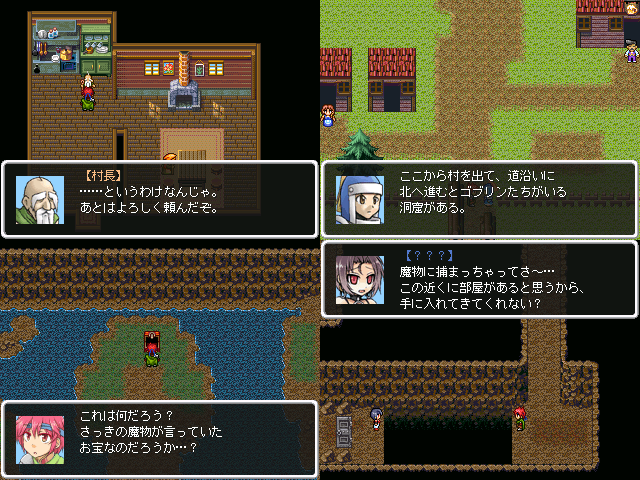

No.52 サンプルクエスト -あなたが作る物語-(2kリメイク) |
|
 |
|
| 作者：宮凪ウィンディオ | |
| ツクール：2000 | |
| ジャンル：DSのサンプルゲーム再現(デフォ戦) | |
| 配信/投稿：おｋ、放送場所を教えてくれたら見にくるよ/むしろやって下さいお願いします | |
| 作者コメント： 「ウィンディオの魔王把握」と「上凪巧斗の憂鬱」の製作者です。 いつものように表用の新作フリゲを作っていたら、「上凪巧斗の憂鬱」に収録してる物も一部ループ処理が上手くいっていなかった事に気づき、 修正版midiの収録のついでに、RPGツクールDS、DS+出身のツクラーとしてDSのサンプルゲームの再現作をｔｋらせていただきました。 元が元なので、すぐにクリアできる遊び所要素がないヌルゲーで最後の投げやり感がムカつく一作ですが、 スレ投下でもいいのでこれを元にした続きを誰かｔｋってやってください。ボクが喜びます。 「「上凪巧斗の憂鬱」の掛け合いがつまらない、midiの使用サンプルｔｋれ」という声がありましたが、 サンプルに関してはツクール2000はまだｔｋり慣れていないので考えておきます。 掛け合いがつまらないのは全て僕のDS、DS+愛のせいです、ご不快な思いをさせて申し訳ございませんでした。 あっ、そうだ(唐突) midiは使っていただけましたか…？(小声) |
|
| 管理人コメント： 素材面の難はあれど、DS+はCS版ツクールの中では良作寄りだと思います。 本当に安いので手に取ってみてはいかがでしょうか。wi-fi使えませんけどね。 |
|
| ダウンロード(1.4MB) / 感想掲示板 | |
| 前の作品 / 次の作品 / TOPへ戻る | |